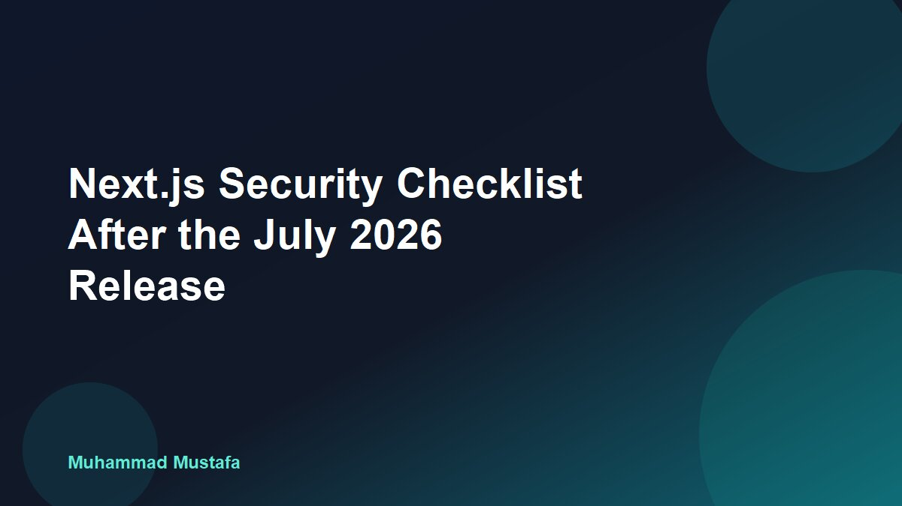

July 24, 2026 · 8 min read
Next.js Security Checklist After the July 2026 Release

A useful Next.js security checklist starts with an urgent task: install the patched framework version. On July 20, 2026, the official Next.js security release advised teams to upgrade to Next.js 16.2.11 on Active LTS or 15.5.21 on Maintenance LTS. Vercel says those releases address four high-severity and five medium-severity vulnerabilities.
That is a strong reason to patch immediately, but a version update is not the whole security review. A production Next.js application can still expose data through a Server Action with no authorization check, a Route Handler that trusts client input, a leaked environment variable, or a weak browser security policy.
I have worked on BWL League, a live multi-role platform built with Next.js and Supabase for admins, coaches, and teams. That type of application makes the security boundary clear: hiding an admin button is not enough. Every server entry point must verify the current user and the exact resource they are allowed to access.
This guide explains the practical process I would use after the July 2026 Next.js security release: identify the deployed version, upgrade safely, audit server entry points, add defensive headers, and prove that production is actually running the fix.
Start the Next.js security checklist with the patch
First, confirm which version is installed in the application—not which version appears in an old document. Run the package manager's version and dependency commands from the same repository and branch used for production.
npm ls next react react-dom
npm outdated
npm audit
npm install next@16.2.11
npm run build
npm testIf the application intentionally remains on Next.js 15, use the patched 15.5.21 Maintenance LTS release instead. Do not jump between major versions during an emergency patch unless the project is ready for the wider migration. A smaller supported upgrade is easier to review and deploy quickly.
Commit the lockfile and inspect the resolved version
Updating only package.json can leave the deployment using a different resolved package than expected. Commit the lockfile produced by the project's existing package manager. Then run npm ls next, or the equivalent pnpm or Yarn command, after a clean install.
I also search for multiple Next.js versions in a monorepo. The marketing site, dashboard, internal tool, and example app may use separate package files. A security update applied to one workspace does not patch the others.
Read the release note before changing code
The July 2026 announcement gives clear target versions and severity counts. Teams should use the linked official advisory as the source of truth as more technical details become available. Avoid copying exploit descriptions from social posts without checking whether they apply to the framework version, router, runtime, or deployment model in your application.
Create a short inventory: current Next.js version, App Router or Pages Router, Node or Edge runtime, hosting platform, use of Server Actions, middleware or Proxy, custom servers, image optimisation, and public Route Handlers. This makes the review focused instead of turning it into a vague hunt through the repository.
Audit every server entry point after upgrading Next.js
Next.js applications have more server entry points than a traditional frontend. Route Handlers, Server Actions, Server Components, middleware or Proxy, and data-access functions can all sit on a path to sensitive information.
Treat Server Actions as public endpoints
A Server Action runs on the server, but that does not automatically make it private. The official Next.js data-security guidance says exported Server Actions create HTTP endpoints and should receive the same authorization checks as public API routes.
Validate every field on the server. Then verify the session and permission immediately before reading or changing data. Do not rely on the page that rendered the form, the visibility of a button, or a role value submitted by the browser.
'use server'
export async function updateTeam(formData: FormData) {
const session = await verifySession()
const teamId = String(formData.get('teamId'))
const input = UpdateTeamSchema.parse({ name: formData.get('name') })
await requireTeamPermission(session.userId, teamId, 'team:update')
return teams.update(teamId, input)
}The important line is the resource-level permission check. Knowing that someone is signed in does not prove they can update the requested team. In a multi-tenant product, every query also needs tenant or organisation scope.
Keep secure authorization close to the data
Next.js recommends centralising secure checks in a Data Access Layer. Proxy can perform a fast optimistic check and redirect anonymous visitors, but it should not be the only defence. Prefetching, nested routes, Server Actions, and direct requests create paths that a layout-level check may not cover.
A strong data function verifies the session, checks the requested organisation or resource, and returns only the fields the caller needs. Data Transfer Objects help prevent a Server Component from accidentally passing a complete database record, internal flag, or private contact field into client-visible output.
Repeat authorization in every Route Handler. Handle unauthenticated and forbidden requests separately. Apply rate limits to expensive operations, login attempts, uploads, search endpoints, and AI calls. The framework patch cannot decide the abuse limits for your product.
Review caching around private data
Caching is useful, but user-specific data must not be shared across sessions or tenants. Review every use cache directive, fetch cache setting, revalidation tag, CDN rule, and custom cache key that touches authenticated data.
A safe cache key includes every value that changes the authorised result. In many cases, the better choice is not to cache sensitive personalised responses at a shared layer. Test with two accounts from different organisations and confirm that one user can never receive the other's content after navigation, refresh, or revalidation.
Harden the browser, configuration, and supply chain
Framework security is one layer. Browser controls, secret handling, dependency hygiene, and deployment settings reduce the damage when application code makes a mistake.
Add security headers deliberately
Next.js supports custom response headers through next.config.js. A Content Security Policy, or CSP, limits where scripts, styles, frames, images, and connections may come from. It is one of the strongest browser-side controls against cross-site scripting, but it must match the application.
Start with a report-only policy if the site uses analytics, payment widgets, maps, chat, or other third-party scripts. Observe legitimate violations, tighten the allowlist, then enforce the policy. Copying a strict policy without testing can break production; allowing every inline script can make the policy nearly useless.
Also consider Referrer-Policy, X-Content-Type-Options: nosniff, a restrictive Permissions-Policy, and frame-ancestors inside CSP. Use HTTPS and secure, HTTP-only, same-site cookies for sessions. Enable HSTS only when the domain and required subdomains are fully ready for HTTPS.
Keep secrets out of client bundles
In Next.js, variables prefixed with NEXT_PUBLIC_ are designed to be exposed to the browser. Never place database credentials, service-role keys, private API keys, signing secrets, or unrestricted backend tokens behind that prefix.
Search the built output and browser network requests for unexpected values. Rotate a secret if it has appeared in source control, a client bundle, build log, screenshot, or shared preview. Removing it from the latest commit is not enough because copies may still exist.
Check the full dependency chain
Run package audit tooling, but do not treat a zero result as proof of safety. Review direct dependencies, automated security alerts, release notes, and abandoned packages. Remove packages that are no longer used; each dependency adds code, update work, and possible exposure.
Pin the Node.js runtime supported by the project, keep CI builds reproducible, and protect the production branch. Preview deployments should not receive production secrets by default. If a preview needs external services, give it restricted credentials and isolated test data.
Verify the Next.js security update in production
A successful local build only proves that one machine produced output. Security work is finished when the correct artifact is deployed, smoke-tested, monitored, and recorded.
Use a controlled deployment path
Deploy the patch to a preview or staging environment first. Test authentication, logout, role changes, Server Actions, Route Handlers, file uploads, payment or email callbacks, and critical navigation. Check server logs for errors and browser logs for CSP violations.
For a multi-role application, use an access matrix. Test an admin, a normal member, a user from another tenant, a signed-in user with no membership, and an anonymous request. Positive tests show that the application still works; negative tests prove that the boundaries still reject access.
Confirm the running version and headers
Do not assume a green hosting dashboard means the patched build is serving traffic. Confirm the deployment commit and build log. Inspect response headers from production, verify redirects and cookies, and check that old instances are no longer receiving requests.
Avoid publishing detailed framework-version headers to users. Internally, keep a deployment record linking the patch version, commit, test results, reviewer, deployment time, and rollback plan. That gives the team evidence without advertising unnecessary fingerprinting information.
Monitor after release
Watch authentication failures, forbidden responses, Server Action errors, unusual request volume, latency, and dependency alerts after deployment. A sudden change may indicate a compatibility problem or an attempted abuse pattern. Keep logs useful but do not record passwords, session tokens, payment data, or sensitive request bodies.
Subscribe to official Next.js security announcements. Vercel has moved toward regular security releases, so patch review should become routine instead of an emergency task performed only after a widely shared incident.
The practical takeaway
The July 2026 Next.js security release makes the first action simple: upgrade to 16.2.11 or, for supported Next.js 15 applications, 15.5.21. Then verify the resolved dependency, build the application, test the preview, and prove the patched artifact reached production.
The deeper Next.js security checklist is equally important. Treat Server Actions and Route Handlers as public entry points, enforce authorization close to the data, scope every multi-tenant query, review private-data caching, add a tested CSP, protect secrets, and monitor the deployment.
Those practices match the way I think about production work on multi-role platforms such as BWL League: the user interface can improve usability, but the server and database must enforce the real boundary.
For the latest targets and guidance, read the official Next.js July 2026 security release, Next.js authentication guide, and Content Security Policy guide. If you need help reviewing or modernising a production Next.js application, contact me.
Written by Muhammad Mustafa — Full-Stack SaaS Engineer
Get in touch